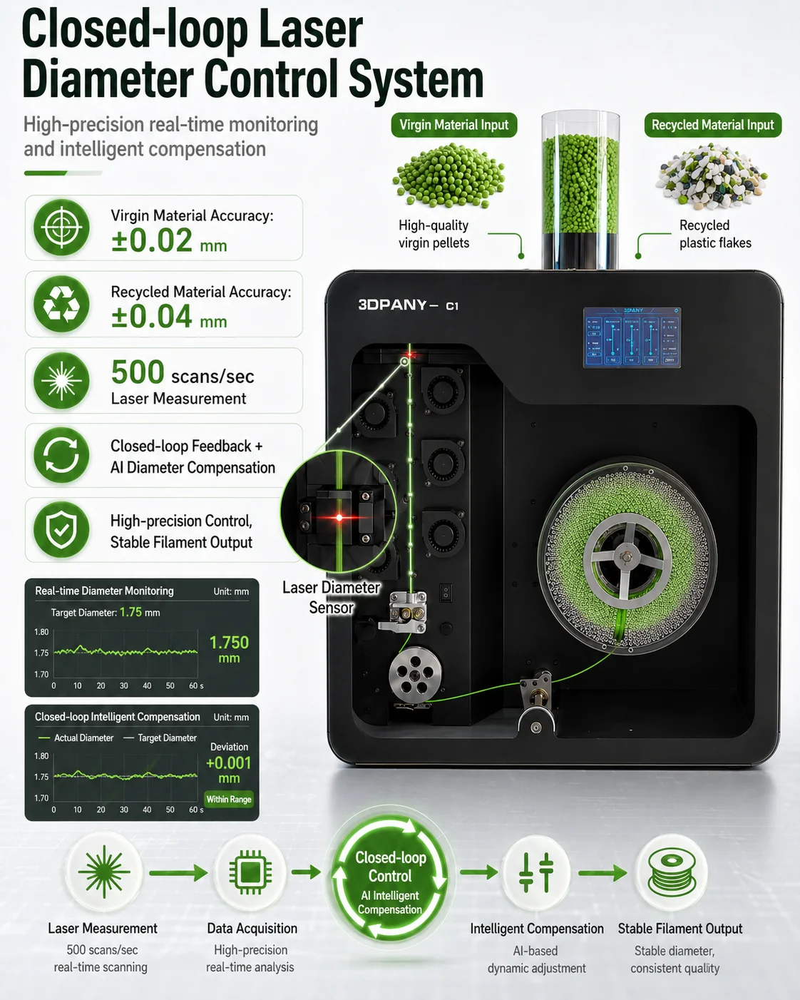
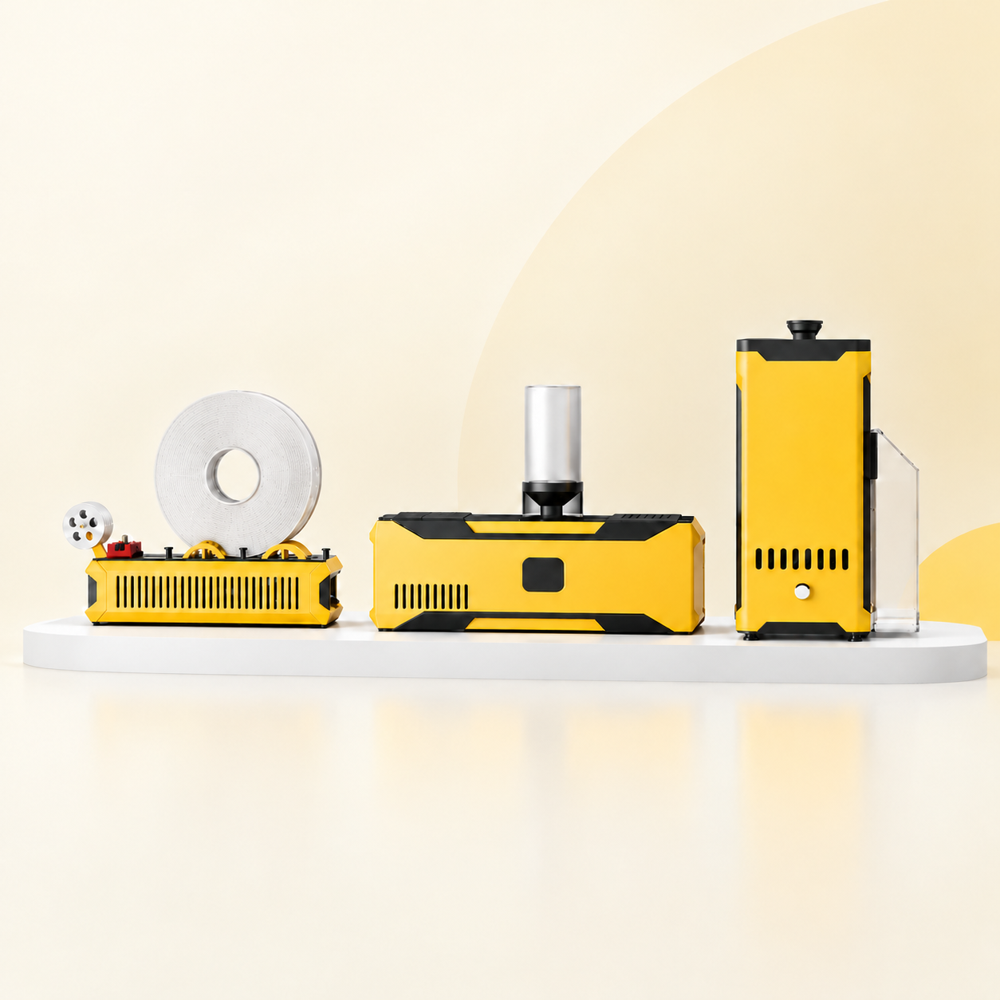
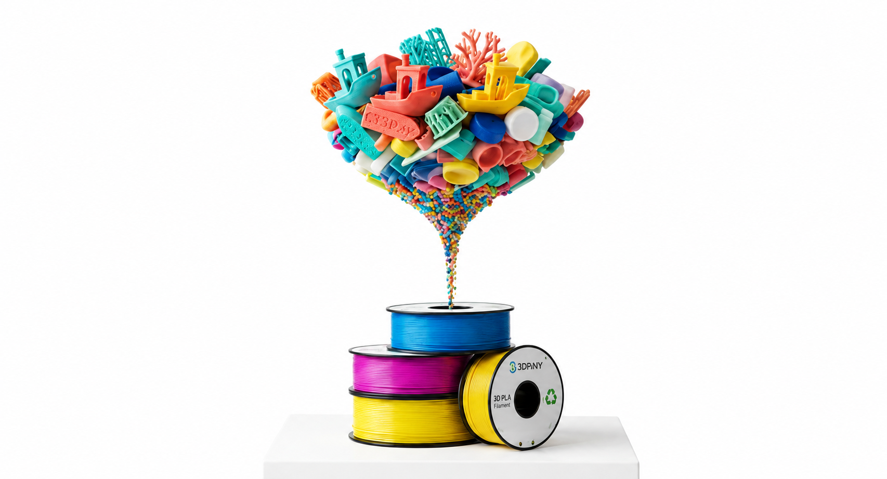
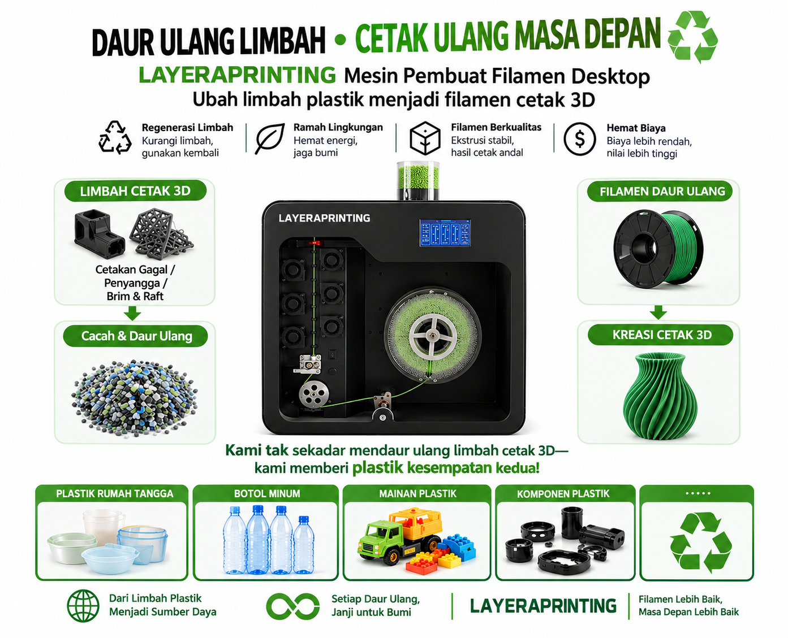

Panduan Alur Daur Ulang Plastik
Panduan Alur Daur Ulang Plastik
 Cara Menyiapkan Mesin Ekstruder Filamen
Cara Menyiapkan Mesin Ekstruder Filamen
 Memilih Filamen yang Tepat
Memilih Filamen yang Tepat

Berita Industri
Temukan peralatan 3D printing inovatif, filamen berkualitas, dan solusi daur ulang yang mendukung masa depan manufaktur yang lebih berkelanjutan.

Unggulan: Sistem Daur UlangPeralatan dan material pilihan untuk mempermudah penggunaan teknologi 3D printing dan pemanfaatan kembali plastik.
Mesin printer andal untuk pembuatan prototipe, pendidikan, dan produksi skala kecil.
Pilihan material dan warna untuk kebutuhan pencetakan sehari-hari maupun teknis.
Peralatan untuk mengolah limbah plastik yang sesuai menjadi filamen yang dapat digunakan kembali.
Peralatan yang dirancang untuk mendukung hasil produksi yang konsisten dan berulang.
Panduan untuk instalasi, pengoperasian, dan perawatan peralatan.
Konfigurasi peralatan untuk berbagai kebutuhan, mulai dari ruang belajar hingga bengkel produksi.
Ubah hasil cetak yang gagal, struktur penyangga, dan sisa plastik menjadi filamen yang dapat digunakan kembali melalui alur kerja yang praktis.
Kumpulkan hasil cetak yang gagal, struktur penyangga, dan sisa plastik yang sesuai.
Cacah dan persiapkan material sebelum melalui proses ekstrusi.
Proses plastik melalui ekstrusi, kemudian gulung menjadi filamen untuk proyek berikutnya.
Perbandingan bersifat kualitatif. Spesifikasi dan data performa akhir akan dikonfirmasi berdasarkan produk yang tersedia.
Sistem extruder dan winding dipisahkan untuk operasi, penyesuaian, dan pemeliharaan yang lebih mudah.
Berbeda dengan desain terintegrasi C1, LAYERAPRINTING indonesia memisahkan sistem extruder dan winding menjadi dua bagian khusus. Hal ini membuat filamen berkelok-kelok lebih mudah untuk mengamati, menyesuaikan, membersihkan, dan memelihara. Ini juga membantu pengguna memecahkan masalah proses ekstrusi dan berliku lebih mudah selama daur ulang harian.
Penghancur berkecepatan tinggi mendukung potongan limbah hingga 10 × 10 × 15 cm, mengurangi kebutuhan untuk pra-pemotongan yang berlebihan.
Sebelum didaur ulang, banyak pengguna perlu memotong cetakan yang gagal menjadi potongan-potongan kecil. Ini membutuhkan waktu dan membuat daur ulang terasa rumit.
Shredder LAYERAPRINTING indonesia dirancang untuk menangani potongan limbah pencetakan 3D yang lebih besar hingga 10 × 10 × 15 cm, membantu pengguna mengurangi waktu persiapan dan bergerak lebih cepat dari limbah ke bahan yang dapat digunakan kembali.
Kurang memotong, Lebih cepat merobek-robek, Daur ulang yang lebih mudah.
Dirancang untuk limbah pencetakan 3D yang diparut - bukan hanya pelet perawan yang sempurna.
Limbah pencetakan 3D yang diparut sangat berbeda dari pelet perawan. Ini tidak teratur dalam bentuk, tidak konsisten dalam ukuran, dan lebih sulit untuk memberi makan dengan lancar.
Itulah sebabnya LAYERAPRINTING indonesia menggunakan desain sekrup yang dikembangkan khusus untuk limbah cetak 3D daur ulang, membantu meningkatkan stabilitas makan, konsistensi leleh, dan keandalan ekstrusi.
Ini adalah salah satu alasan utama LAYERAPRINTING indonesia dapat mendukung daur ulang berbasis limbah 100% tanpa memerlukan pelet perawan.
Informasi berikut merupakan gambaran umum. Sesuaikan dengan data produk yang telah dikonfirmasi.
Warna yang ditampilkan merupakan ilustrasi.

Untuk mengurangi limbah dan menciptakan masa depan yang berkelanjutan, kami telah mengembangkan solusi inovatif yang mengubah limbah plastik menjadi filamen pencetakan 3D yang berharga. Sistem loop tertutup kami memastikan dampak lingkungan minimal sambil menyediakan bahan berkualitas tinggi untuk proyek Anda.
Material bergerak melalui proses pengumpulan, pencacahan, dan ekstrusi, kemudian kembali digunakan dalam produksi. Tingkat pemulihan material bergantung pada jenis plastik dan proses yang digunakan. Data teknis akan disediakan sesuai sistem terkait.

Kami berdedikasi untuk mengembangkan extruders filamen pencetakan 3D tingkat desktop yang menciptakan sistem produksi loop tertutup yang berkelanjutan. Melalui daur ulang dan penggunaan kembali, kami mengurangi limbah plastik, melindungi lingkungan, dan menyediakan pelanggan kami dengan bahan cetak yang ramah lingkungan dan hemat biaya.

Manfaatkan kembali plastik yang sesuai menjadi filamen untuk kebutuhan internal.
Mendukung eksperimen polimer daur ulang dan pengembangan formulasi material.
Mendukung pembelajaran langsung di bidang rekayasa, teknologi, dan keberlanjutan.
Mendukung produksi filamen khusus dan pemanfaatan material secara lebih efisien.
Membantu pembuatan prototipe dan komponen dalam jumlah terbatas.
Mendukung pembuatan prototipe dan alat bantu industri sesuai validasi serta standar penggunaan masing-masing.
